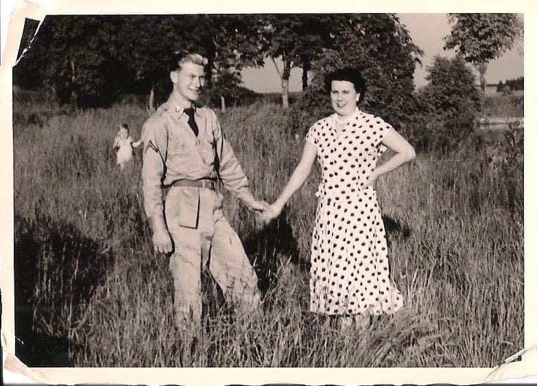
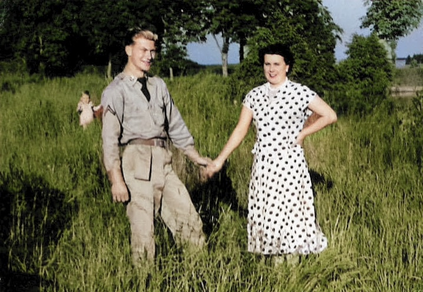
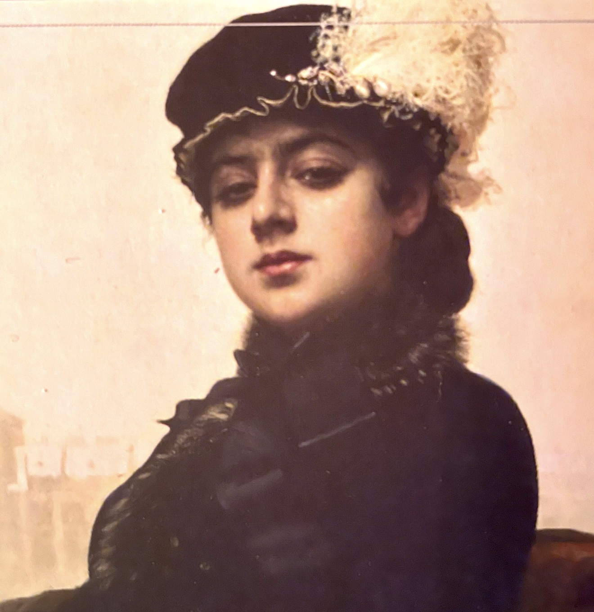
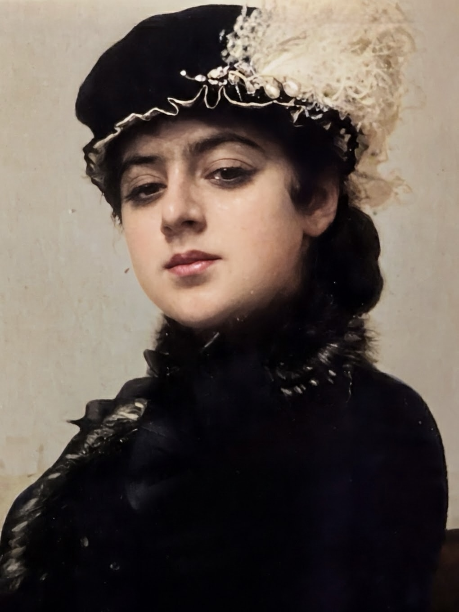
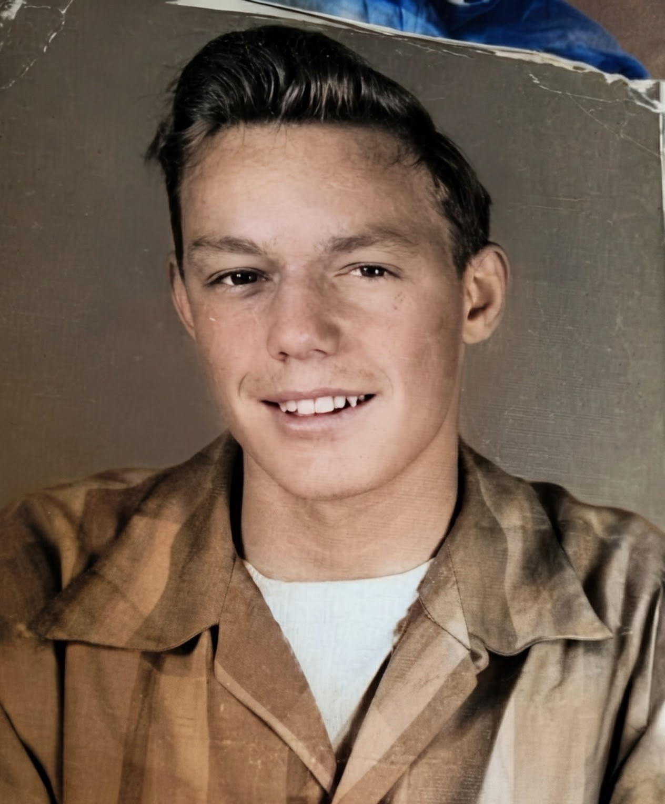
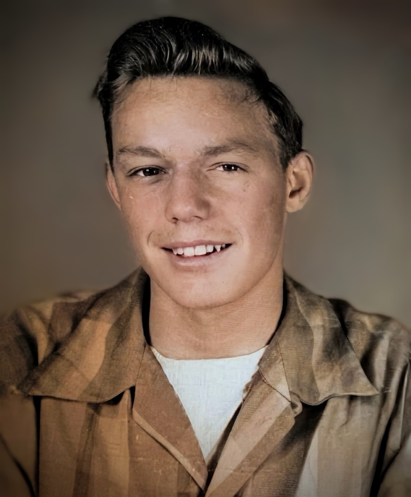

01 / REPAIR
Damage & wear
Careful digital repair of scratches, creases, tears, spots, and other signs of age where possible.
Faded faces, cracked prints, and family memories deserve to be treasured. I restore photographs with care, helping bring beloved moments back into focus while honoring their original character.
Personal, careful restoration for the photographs you can’t replace.
Every photograph is different. Tell me about yours, and we can discuss the best way to preserve it.
Careful digital repair of scratches, creases, tears, spots, and other signs of age where possible.
Improve contrast, tone, and clarity to help old or faded images feel more vivid while keeping them natural.
Digitally preserve meaningful portraits and family moments so they’re easier to share, print, and enjoy.
I offer photography sessions for individuals, families, and special occasions. Let me help you capture life's meaningful moments with beautiful photographs you'll treasure for years to come.
Every photograph tells a story worth preserving. Explore these before-and-after examples to see how thoughtful restoration can help treasured memories shine again.
Before and after restoration


Before and after restoration


Before and after restoration


Each restoration is unique. Results depend on the quality, condition, and available detail of the original photograph.
Describe the photo, the damage, and what you hope to preserve. A clear scan or photo of the print helps me assess it.
I’ll review the image and discuss the scope, estimated price, timing, and what can realistically be improved before work begins.
Once we agree on the plan, the restored digital image can be delivered for you to save, share, or print.
Hello, I'm Victoria. My love of photography began in 2006, when I bought my first camera. From that moment on, I rarely went anywhere without a way to capture the world around me— whether it was my first DSLR or the camera on my phone. Over the years, photography has become much more than taking pictures; it’s a way of noticing the little details, holding on to meaningful moments, and preserving the stories that make up a life.
That same love is what draws me to photo restoration and digitization. Old photographs are more than images—they’re pieces of family history, connections to loved ones, and memories that deserve to be passed down. I’m passionate about helping preserve those treasures so they can be enjoyed, shared, and remembered for generations to come. At Photographic Memory Atelier, every photograph is treated with care and respect for the story it holds.
Photography isn't my only passion. I hold a B.S. in Criminology and have spent the past 14 years developing a career in IT. Throughout that time, I've learned the value of patience, attention to detail, and building lasting relationships— qualities I bring to every photography project.
Beyond my profession, my Catholic faith plays a significant role in my life and shapes the way I see the world. I believe some of life's greatest gifts are found in everyday moments, family traditions, and meaningful connections. My mission is to capture those moments beautifully and authentically, giving you photographs you'll treasure long after the day has passed.
Not always. Results depend on the image quality and the amount of missing or damaged detail. I’ll be honest about what seems possible before accepting a project.
For digital restoration, a high-quality scan or well-lit, straight-on photo is often enough to begin. Keep the original safe; don’t mail it unless a separate arrangement is explicitly agreed.
Pricing depends on the photograph’s condition, complexity, and requested result. Contact me with a description and I can discuss a quote before any work begins.
Colorization may be possible as an optional service. Colors are interpretations rather than guaranteed historical facts, and we can discuss a natural or more artistic approach.
Let’s talk about the photograph you’d love to see restored.
Tell me a little about your photograph or the photography session you have in mind. I’ll be happy to discuss next steps.